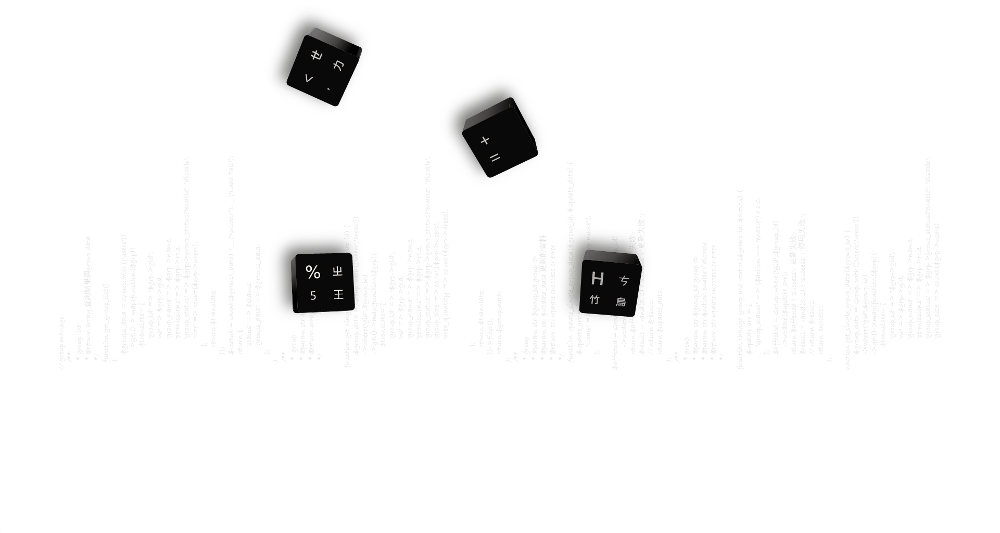
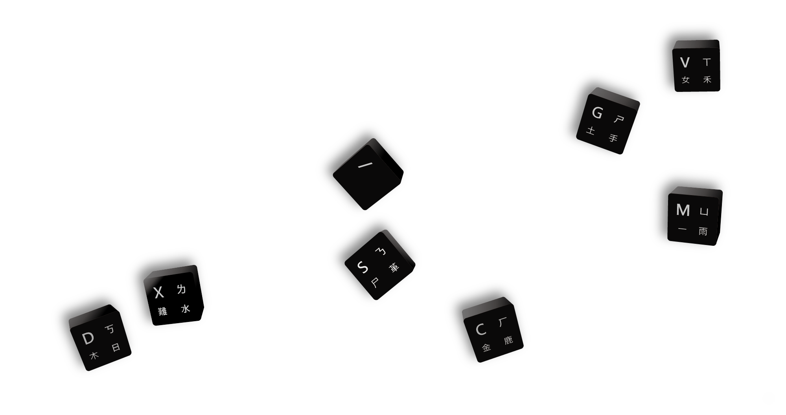
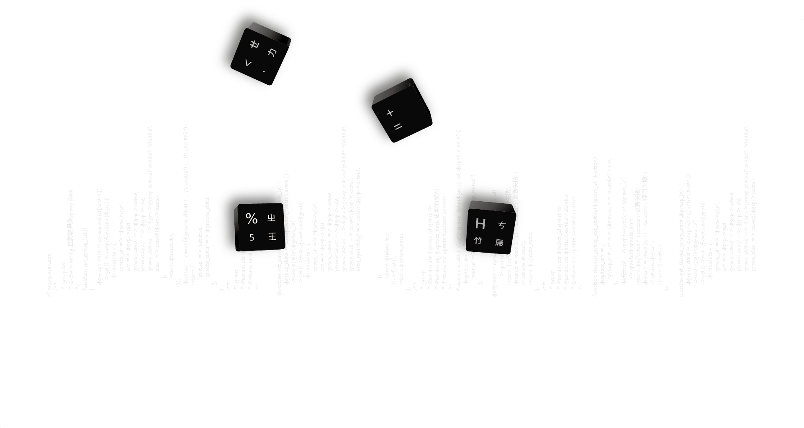
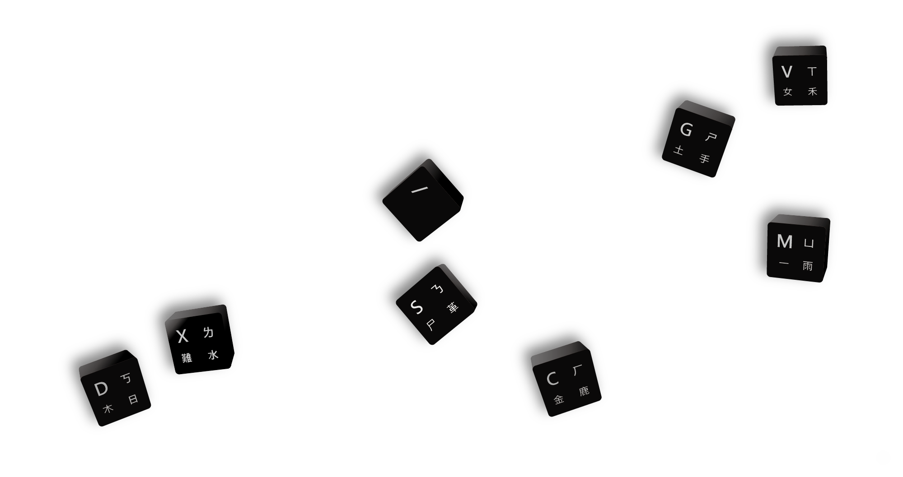

工作與學經歷
雙肩智慧股份有限公司 - UI UX設計師 2021~NOW
金上吉塑膠股份有限公司 - 專案設計師 2020~2021
嘉泰鋼模股份有限公司 - 模具機構工程師 2017~2019
起勁設計 - 電子產品設計師 2016~2017
國立成功大學 - 工業設計所 2013~2015
國立高雄師範大學 - 工業設計系 2010~2013
生活不變的就是變，所以不斷創新成了日常
我目前在雙肩擔任UI UX產品設計師，專注於智慧農業與智慧製造 根據產業的生態與特點，提出好的使用流程、與直覺性的介面，提供易懂的操作與舒服的設計!
由於我擁有豐富的傳統產業開發經驗，像是電子產品與機構設計、嬰兒用品設計、模具機構設計等，從前期使用者行為與操作安規測試研究、設計執行階段到後續技術量產、品管教驗流程。所以當面對智慧製造的流程與系統開 發時，我馬上能進入狀況，根據過去的經驗，那些好的使用流程、累贅的操作行為，分享給我的夥伴並改善，我善於觀察人的行為與傾聽，能用不同的角度解構產品與產業生態，這是其他設計師沒有的。
目前專注於使用者流程研究和介面設計，根據使用需求與市場相似產品分析，提出更好的操作行為，解決現階段市面產品使用上的盲點，並成為使用者與工程師溝通的橋樑，同時也追蹤後續開發後，使用者的使用回饋並改善。 以下重點分享~